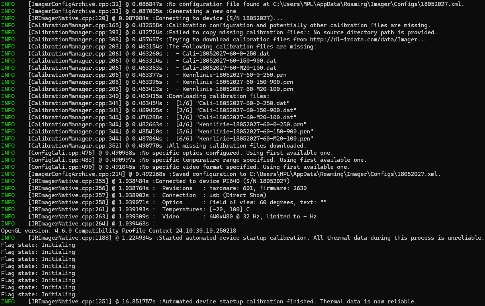
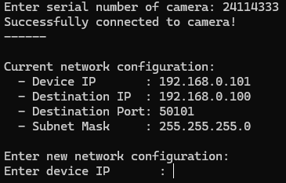
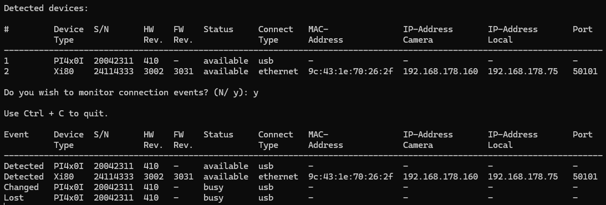
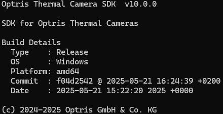

|
Thermal Camera SDK 11.4.9
SDK for Optris Thermal Cameras
|
|
Thermal Camera SDK 11.4.9
SDK for Optris Thermal Cameras
|
The best way to get started with the SDK is to try out the precompiled Simple View example. Attach your camera to your computer and navigate to the start/desktop menu entry of the Simple View application. Make sure you have internet access because the SDK may download calibration files from Optris servers.
Once you click on it, two windows will open.
192.168.0.0/24 by default. If your device is part of another network or if it has an older firmware revision, the precompiled Simple View example will not be able to locate it. Alternatively, you can use one of the SimpleView source code examples and adjust the network address there.The first window displays a live stream of false color images generated from the thermal data received from the camera.

The red cross-hair denotes the spot with the hottest and the blue one the spot with the coldest temperature within the frame. The corresponding temperatures in degree Celsius are shown right to the cross-hairs. The white cross-hair is fixed in the center of the frame and its value represents the mean temperature in a small area around it.
The legend in the upper right corner features two FPS values. The one for Display refers to frame rate with which the content of the window is rendered. The FPS for Src relates to the frequency with which data frames are provided by the SDK.
The second window is a terminal displaying the logging output of the SDK.

The logging output of the SDK is quite extensive in this case because it was the first time that the camera PI 640 with the serial number 18052027 was used. Let us break the logs down to get a first glimpse at how the SDK operates.
There are three ways to initialize a device connection by providing
DeviceInfo object (from the EnumerationManager) orIRImagerConfig object.If the provided serial number or the one stored in the DeviceInfo or IRImagerConfig objects is 0, the SDK will query the EnumerationManager for detected devices. It will then use the detected device with the lowest serial number that is currently available (aka. has no active connection to another SDK application or the PixConnect).
In the example above the connection was initialized by providing the serial number 0.
If the connection was not initialized with the help of a DeviceInfo object, the SDK queries the EnumerationManager for a detection of the desired device. These detections include basic information about the device, connection details and whether the device has already an active connection to anther SDK application or the PixConnect.
In our example this is not necessary since we already asked the EnumerationManager for a device detection.
If the connection was not initialized by providing a IRImagerConfig object, the SDK tries to locate a configuration file specifying how to operate the camera. It contains settings detailing, amongst other things,
Now the SDK has potentially a IRImagerConfig and a DeviceInfo object that both contain details about the connection to the camera. Depending on which objects are available the SDK performs one of the following actions:
| # | Device Detected (DeviceInfo) | Configuration File Found (IRImagerConfig) | SDK Action |
|---|---|---|---|
| 1. | ✅ | ✅ | Use the connection details of DeviceInfo but leave the configuration file unchanged. |
| 2. | ✅ | ❌ | Use the connection details of DeviceInfo and generate a configuration file based on it. |
| 3. | ❌ | ✅ | Use the connection details of IRImagerConfig. |
| 4. | ❌ | ❌ | Error. Throw exception. |
For our example the SDK was unable to find an appropriate configuration file. Therefore, it scheduled the creation of a new one. This does not happen right away since the SDK first gathers more information about the camera, like its device type or its supported video formats. Once completed it saves a new configuration file named <Serial Number>.xml to
<User AppData>\Roaming\Imager\Configs on Windows or to~/.config/optris/Configs on Linux or toAt this point the SDK establishes two communication channels with the camera. One is used to send control commands to the device and the other is utilized for streaming the thermal data from the camera to the SDK.
For more details refer to the Device Communication chapter.
In order to provide precise temperature measurements the SDK has to locate and load the files containing the camera calibration. The calibration can consist of up to three different file types:
Cali-<Serial Number>.xml detailing for which optics, temperature ranges and video formats calibrations are available.Cali-<Serial Number>-<...>.dat containing the calibration.Kennlinie-<Serial Number>-<...>.prn containing additional characteristic curves.Because a new camera was used the required calibration files were not present on the system. The SDK determined the missing files and tries different sources to acquire them. By default it probes the following sources in the sequence listed below:
Sdk class, the SDK will search it recursively for the missing calibration files.Sdk class. There you can prioritize the different possible sources or even deactivate the automated acquisition all together.thermalFrame in the FrameEvent)rawFrame in the RawFrameEvent)You can find more exhaustive details about the calibration file acquisition chapter.
Once it is clear which calibrations are available for the camera the SDK deduces the possible operation modes. An operation mode is defined by a valid combination of the following configuration options:
The values in the configuration file are matched against the resulting modes to ensure that the desired settings are correct.
With the newly connected camera the SDK automatically chooses the first available optics, the first available temperature range and the first available video format respectively.
For more details about Operation Modes please refer to the respective chapter.
Now everything is set and the connection is established. The SDK receives thermal data from the device and begins the startup calibration. During this process the SDK clients already receive thermal frames but the contained temperature measurements are unreliable. Therefore, clients should wait until this calibration is finished before further processing the data.
Initializing. You can get the flag state for each thermal frame through the corresponding FrameMetadata instance. Test, if it is not equal to Initializing to ensure the thermal data is valid.The device settings that the SDK should use are defined in an XML based configuration file. Many of these settings can also be changed at runtime. Please refer to the API documentation of the IRImager interface for more details.
The following two sections describe the two most important configuration options. For more information about all the other available settings please refer to the documentation of the configuration file.
The SDK supports both USB and Ethernet connections. The relevant settings can be found in the configuration file between the <connection> tags:
First you have to define which connection interface to use: USB or Ethernet. Write your choice between the <interface> tags. The SDK ignores the case of the provided string. If you chose USB, you do not need to give any more details. In the case of Ethernet you have to specify at least the following additional settings:
<ip_address> tags.<port> tags.Furthermore, you can instruct the SDK to check whether the sender IP address of received data packages equals the one set in the <ip_address> tags. If the IP addresses do not match, the data packages will be discarded. Set <check_ip> to true to activate this check or to false to deactivate it.
Finally, you can specify a connection timeout in seconds in the <timeout> tags. If the SDK does not receive data packages for more than the set amount of time, it will trigger the onConnection() callback of the IRImagerClient class with the ConnectionState set to Timeout.
IRImager::connect()).Connections timeouts are a good way to detect connection losses with Ethernet devices. The SDK can detect errors when sending commands via TCP to these devices and will subsequently trigger an onConnection() callback with the state set to Lost or Timeout. But depending on your network layout (camera behind a switch or router) this may prove insufficient.
For more insights into the communication of the SDK with the device please refer to the chapter Device Communication.
The configuration settings for optics, temperature ranges and video formats are dependent on each other. There is only a limited number of valid combinations that are defined by
Consult the Supported Cameras section in the Features chapter to get a list of the available video formats and temperature ranges for each supported device type.
The currently used camera optics are specified by two data points: The <field_of_view> of the optics in degree and an optional <text> further defining the optics.
If you set <field_of_view> to 0 and leave the <text> blank, the SDK will automatically choose the first optics specified in the calibration configuration.
The temperature range is defined by its non-extended <min> and <max> temperatures in degree Celsius.
If <min> and <max> are set to 0, the SDK will automatically select the first available temperature range of the optics defined in the calibration configuration.
For some devices the temperature range can be extended by setting the option <extended> to true. This can be helpful to align the field of view of the camera when using temperature ranges with high lower limits.
Some devices can make temperature measurements with a higher precision for selected temperature ranges. If you set <enable_high_precision> to true, this higher precision will automatically be used if it is available. Set it to false, if you just want to use the standard precision throughout.
The video format is specified by the frame dimensions <width> and <height> in pixels and by its <framerate> in Hz. Consult the Supported Cameras section in the Features chapter for exhaustive lists detailing what formats are available for each device type.
If <width>, <height> and <framerate> are all set to 0, the SDK will choose the first available video format.
You can instruct the SDK to reduce the framerate by setting a <subsample_framerate> that is equal or less than the device <framerate>. This setting adjusts the rate with which IRImagerClients receive onFrame() callbacks but does not alter the framerate of the device itself.
<subsampled_framerate> setting does not affect the rate with which the device publishes frames as specified by <framerate>. In fact the SDK has no way to manipulate the device framerate besides choosing a different video format.The SDK comes with a set of command line tools that allow you to configure the on-device Ethernet settings, find devices and print SDK version and build information.
This tool allows you to configure the on-device Ethernet settings of cameras that offer Ethernet connectivity. Make sure that your device can either be reached via USB or Ethernet. You run the tool by executing the following command in the terminal (Linux) or in the PowerShell (Windows):
Windows
Linux
The following options are available:
| Option | Argument | Description |
|---|---|---|
-h, --help | - | Prints a help message on the command line. |
-u, --usb | - | Just search for USB devices. |
-a, --address | address of the network to search in CIDR notation (e.g. 192.168.0.0/24) | Search this network for Ethernet devices. |
If you add the option -u, the tool will only look for devices that are connected via USB. When omitting this option the tool will also automatically search the network 192.168.0.0/24 for Ethernet devices. Use the -a option to adjust the used network address: 192.168.0.0/24 in CIDR notation equates to the network address 192.168.0.0 and the subnet mask 255.255.255.0. The SDK ignores the host portion of the provided IP address.
If you wish to change the settings of a device in the network 192.168.178.0/24, call following command:
Windows
Linux
Next you will be prompted for the serial number of the device whose Ethernet settings are to be changed. After you hit Enter the tool connects to the camera and displays the current configuration.

If successful, you can now enter the new device IP address, the IP address and port to which the device should send its data (destination) to and the subnet mask of the network. Provide the IP addresses and the subnet mask in dot notation.
You can leave the tool at any time with the help of Ctrl + C.
Once you entered all the required information the tool applies the settings to the device. Then it fetches the settings again and displays them so that you can verify that everything was configured correctly.
This tool displays all devices that are currently connected to the computer via USB or Ethernet and allows you to monitor connection events.
Windows
Linux
The following options are available:
| Option | Argument | Description |
|---|---|---|
-h, --help | - | Prints a help message on the command line. |
-e, --exit | - | Print detected devices and exit. |
-m, --monitor | - | Keep monitoring connection events. |
-c, --connection | usb or eth | Search only for USB or Ethernet devices. |
-a, --address | address of the network to search in CIDR notation (e.g. 192.168.0.0/24) | Search this network for Ethernet devices. |
You can instruct the tool to search only for devices with a specific connection interface with the help of the -c option. By default the tool searches for USB devices and for Ethernet devices on the network 192.168.0.0/24. You can adjust the searched network by providing its address in CIDR notation via the -a option. 192.168.0.0/24 in CIDR notation equates to the network address 192.168.0.0 and the subnet mask 255.255.255.0. The SDK automatically ignores the host portion of the provided IP address.
Firstly, all currently connected devices are displayed. Then depending on the command line options the tool
-e)-m)y to do so or n to quit.
The tool lists the following possible pieces of information about each detected device:
| Column | Values | Description |
|---|---|---|
| Event | Detected, Lost, Changed | Type of connection event. |
| Device Type | Device type. | |
| S/N | Device serial number. | |
| HW Rev. | Device hardware revision. | |
| FW Rev. | Device firmware revision. | |
| Status | available, busy | Indicates whether the device has an active connection to a SDK application or the PixConnect. |
| Connect Type | usb, ethernet, ... | Specifies the type of the connection to the device. |
| MAC-Address | MAC-Address of the device. | |
| IP-Address Camera | IP-Address of the device. | |
| IP-Address Local | IP-Address to which the device sends the data. | |
| Port | Port to which the device sends the data. |
You can leave the tool at any time with Ctrl + C.
This tool just displays basic version and build information about the SDK.
Windows
Linux
